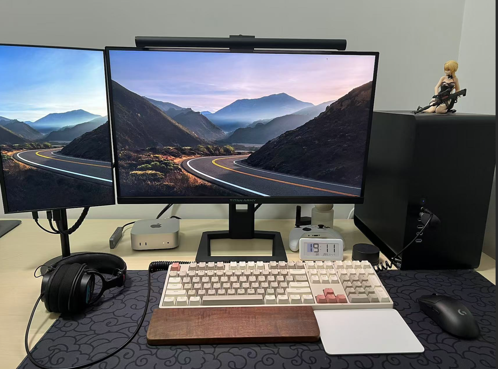

桌面时钟产品选择：我的体验与分析
2024年11月14日
1. 我为什么需要桌面时钟
在生活中，时间是很重要的，不管是过去、现在还是未来。
- 虽然现代操作系统的任务栏都会默认显示当前时间，但在某些方面还是存在一些不足。
- 当任务栏设置了自动隐藏后（我也会为了更专注在某个件事上开启任务栏的自动隐藏），查看时间就需要额外的操作
- 玩游戏或者看视频等全屏任务时，也无法看到时间
- 手表或者手机查看时间也是需要额外的精力，对比桌面时钟只需要眼神瞟一眼，抬手腕，点手机屏幕等操作显得还不够优雅。
所以，我希望找到一款专门的桌面时钟产品，能够更直观、便捷地展示时间，能让我随时知道当前的时间，同时又避免分心。
在选择产品时，我个人任务几个关键因素。
- 是否需要额外的电源
- 续航
- 时间准确度
- 价格
- 美观
2. 我的方案：米家电子温湿度计 Pro
找来找去，最后我选择了“米家电子温湿度计 Pro”作为我的桌面时钟。虽然它的主要功能是监测温湿度，但把它作为我的桌面时钟意外的很符合我的需求。

优点
- 无需接电源：接电源就要一根额外的线，桌面会显得混乱，它使用的是
2 颗
纽扣电池CR2032。 - 长续航：电子水墨屏和低刷新率，电池可以用半年以上。
- 长时间使用准确度：准确度一般，使用几个月后可能会误差
1-2
分钟，但是可以方便
手机蓝牙校准时间，这也是我考虑它的一个很重要的原因，不然几个月就要手动校一次时间会很麻烦。所以我家里的挂钟使用的是电波校时（后来发现，只有窗户旁边才能收到电波，所以每几个月我就会拿到窗户放一晚，第二天时间就校准了 - 价格：¥ 99，如果单纯展示时间就有点贵了，带了温湿度传感器并且能和米家联动我就觉得性价比好不错。
- 美观：算简洁，不过和我桌面不是很搭，没有苹果产品的那种极致简洁的感觉
不足
- 没有日期：没有展示日期和星期，如果有的话会更加分
- 不够美观：时间字体以及产品外观不够美观
- 没有提醒功能：虽然这个对我来说不是很重要，但是如果有类似番茄时钟，我也许会用得上。
3. 其他方案分析
其他方案我都考虑过，主要都有一些痛点，具体内容后面再补中吧
- 方案一：智能桌面时钟 (带智能音箱之类的) 大部分都需要接电源
- 方案二：[新/旧]手机当作桌面时钟 需要充电，使用和作时钟来回切换
- 方案三：非智能的桌面时钟 隔一段时间就需要手动校准时间，可能会有一些非常准确的时钟，一年才需要校准一次，我猜测价格应该也会比较高
- 方案四：电波校时的桌面时钟，
4. 总结
在选择桌面时钟产品时，考虑自己的需求和使用场景至关重要。虽然“米家电子温湿度计 Pro”和我个人的需求比较匹配，但美观上，时间准确度不够理想，并且缺少倒计时、提醒等功能。其他方案也各有优缺点，最终选择应根据个人的使用习惯和偏好来决定。
如果和我有类似的看法，米家电子温湿度计 Pro 是一个不错的选择。 【京东】小米米家电子温湿度计 Pro 到手价：¥99.00 购买链接：https://u.jd.com/IDRPVNV
希望我的分享能为你们的选择提供一些参考，帮助你找到最适合自己的桌面时钟产品！
变更日志
2024.11.14创建文章